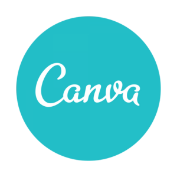
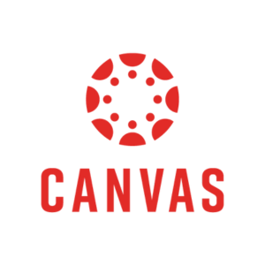
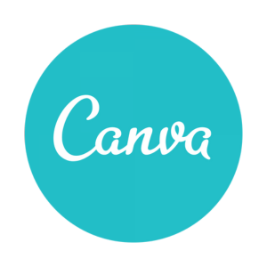
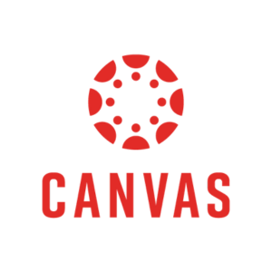

Instagram App
Calendly App
Canva Website
Canvas Website
Hi! I'm Steph.
A Front-End Developer || Graphic Designer
Digital Experiences, One Line of Code at a Time.
Instagram App
Calendly App
Canva Website
Canvas Website
Skills
HTML Alchemy:
I have the power to transmute plain text into elegant, structured HTML code. My spells ensure cross-browser compatibility and accessibility for all.
CSS Enchantment:
With my mystical CSS talents, I can craft visually stunning and responsive designs that captivate users. I'm well-versed in CSS animations, transitions, and flexbox sorcery.
Responsive Riddles:
I wield the power of media queries to make websites adapt gracefully to any device or screen size, ensuring a seamless user experience.
Version Control Voodoo:
My command over version control systems like Git allows me to collaborate with other developers seamlessly, ensuring code harmony.
Autobioraphy